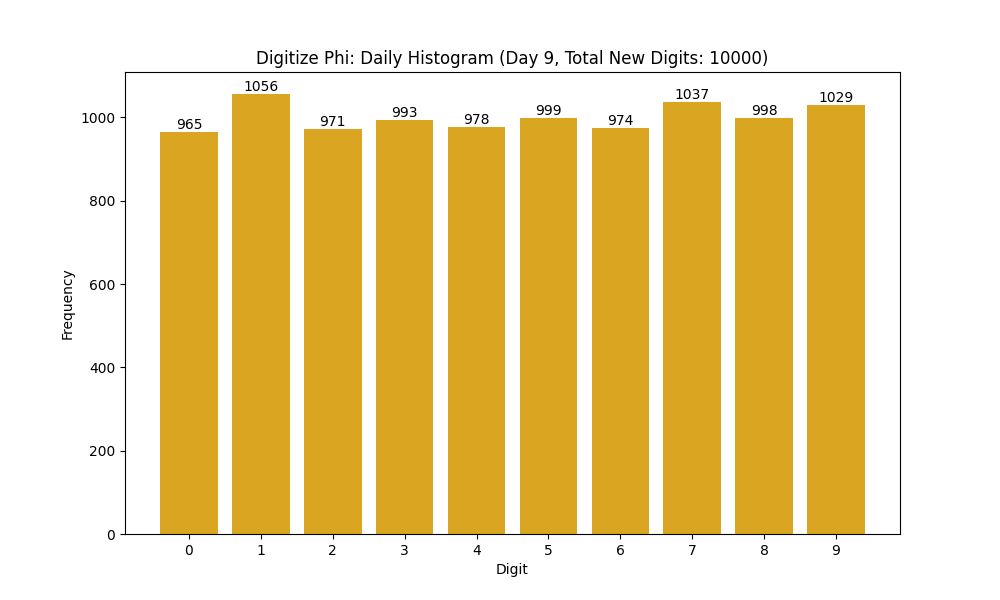

Digitize φ Project: Archives
← Back to the Main Project Page
Day 029: Digits 290,001 - 300,000
July 24, 2025

Day 028: Digits 280,001 - 290,000
July 23, 2025

Day 027: Digits 270,001 - 280,000
July 22, 2025

Day 026: Digits 260,001 - 270,000
July 21, 2025

Day 025: Digits 250,001 - 260,000
July 20, 2025
Day 024: Digits 240,001 - 250,000
July 19, 2025
Day 023: Digits 230,001 - 240,000
July 18, 2025
Day 022: Digits 220,001 - 230,000
July 17, 2025
Day 021: Digits 210,001 - 220,000
July 16, 2025

Day 020: Digits 200,001 - 210,000
July 15, 2025
Day 019: Digits 190,001 - 200,000
July 14, 2025
Day 018: Digits 180,001 - 190,000
July 13, 2025

Day 017: Digits 170,001 - 180,000
July 12, 2025
Day 016: Digits 160,001 - 170,000
July 11, 2025

Day 015: Digits 150,001 - 160,000
July 10, 2025
Day 014: Digits 140,001 - 150,000
July 09, 2025
Day 013: Digits 130,001 - 140,000
July 08, 2025

Day 012: Digits 120,001 - 130,000
July 07, 2025
Day 011: Digits 110,001 - 120,000
July 06, 2025
Day 010: Digits 100,001 - 110,000
July 05, 2025
Day 009: Digits 90,001 - 100,000
July 04, 2025
Day 008: Digits 80,001 - 90,000
July 03, 2025
Day 007: Digits 70,001 - 80,000
July 02, 2025

Day 006: Digits 60,001 - 70,000
July 01, 2025

Day 005: Digits 40,001 - 50,000
June 30, 2025

Day 004: Digits 30,001 - 40,000
June 29, 2025
Day 003: Digits 20,001 - 30,000
June 28, 2025

Day 002: Digits 10,001 - 20,000
June 27, 2025

Day 001: Digits 1 - 10,000
June 26, 2025